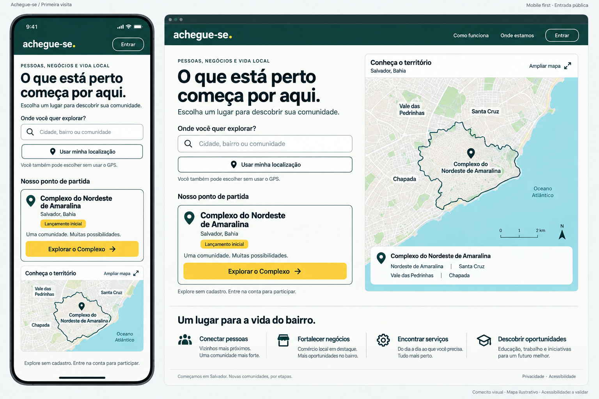
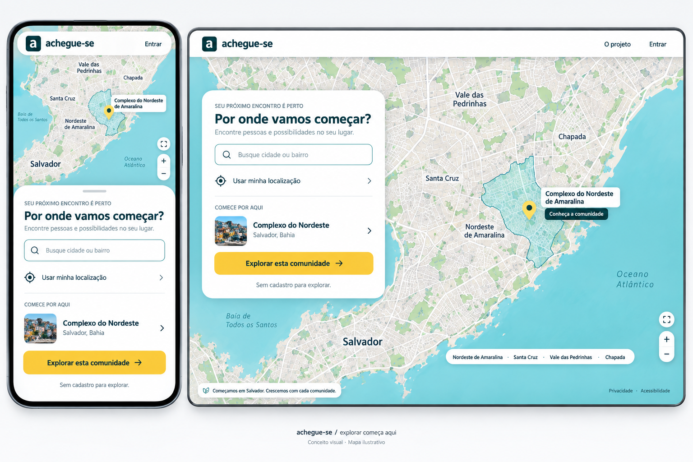
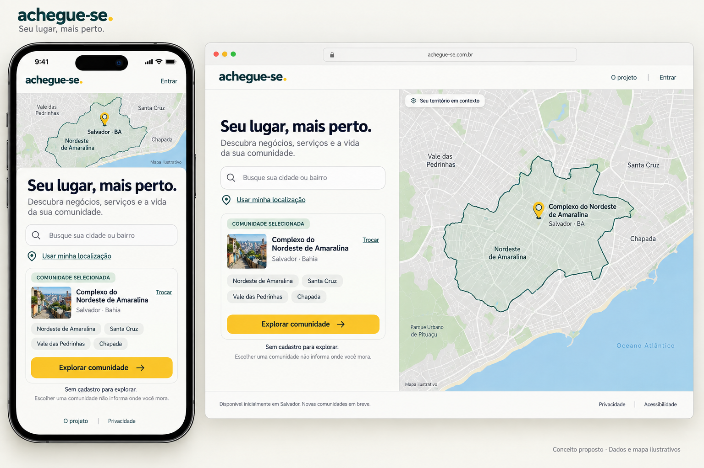

← CatálogoEntrada do site
MVP no Complexo; explorar sem cadastro e convite para expansão. Pesquisa de cidade das versões antigas não é necessária com um único território ativo.
Documento da página · Registro da revisão

006-entrada-introducao · Histórico — não aplicar automaticamente
007-entrada-mapa · Histórico — não aplicar automaticamente
053-entrada-mapa-revisada · Histórico — não aplicar automaticamente059-entrada-mvp-complexo · Referência para revisão